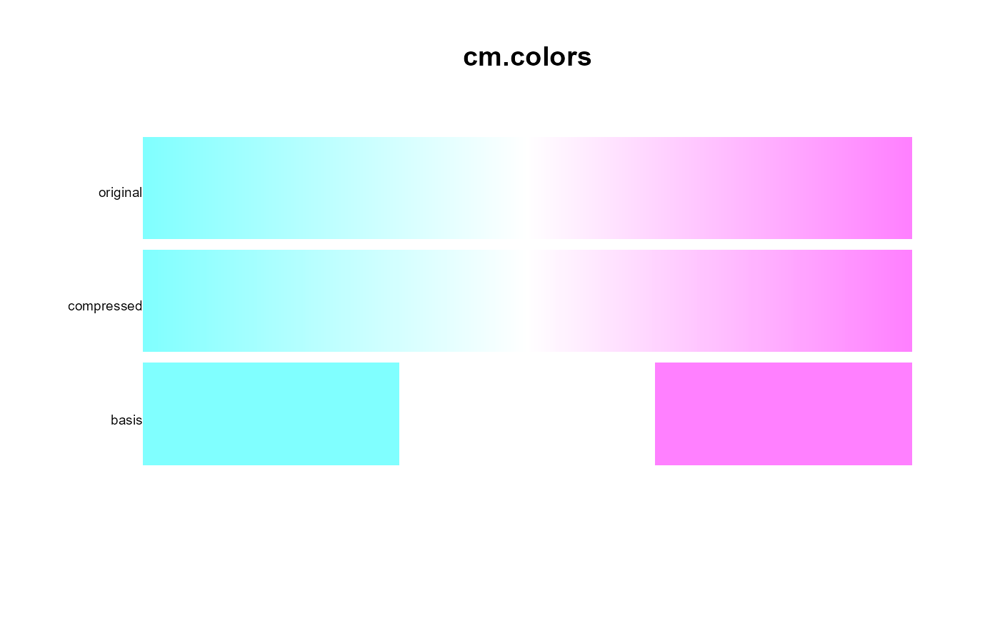
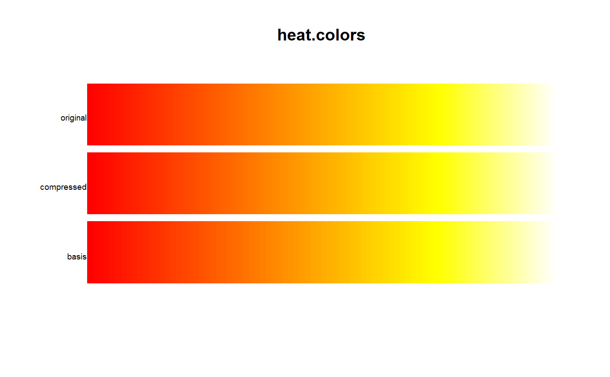
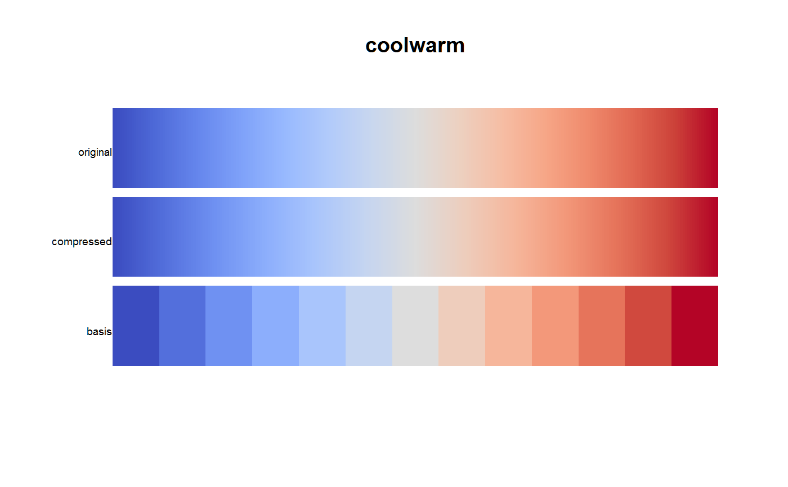

pal.compress.RdCompress a colormap function to fewer colors
pal.compress(pal, n = 5, thresh = 2.5)
| pal | A colormap function or a vector of colors. |
|---|---|
| n | Initial number of colors to use for the basis. |
| thresh | Maximum allowable Lab distance from original palette |
A vector of equally-spaced colors that form the 'basis' of a colormap.
Colormap functions are often defined with many more colors than needed. This function compresses a colormap function down to a sample of colors that can be passed into 'colorRampPalette' and re-create the original palette with a just-noticeable-difference.
Colormaps that are defined as a smoothly varying ramp between a set of colors often compress quite well. Colormaps that are defined by functions may not compress well.
None.
# The 'cm.colors' palette in R compresses to only 3 colors cm2 <- pal.compress(cm.colors, n=3) pal.bands(cm.colors(255), colorRampPalette(cm2)(255), cm2, labels=c('original','compressed','basis'), main="cm.colors")# The 'heat.colors' palette needs 84 colors heat2 <- pal.compress(heat.colors, n=3) pal.bands(heat.colors(255), colorRampPalette(heat2)(255), heat2, labels=c('original','compressed','basis'), main="heat.colors")# The 'topo.colors' palette needs 249 colors because of the discontinuity # topo2 <- pal.compress(topo.colors, n=3) # pal.bands(topo.colors(255), colorRampPalette(topo2)(255), topo2, # labels=c('original','compressed','basis'), main="topo.colors") # smooth palettes usually easy to compress p1 <- coolwarm(255) cool2 <- pal.compress(coolwarm) p2 <- colorRampPalette(cool2)(255) pal.bands(p1, p2, cool2, labels=c('original','compressed', 'basis'), main="coolwarm")#> [1] 2.07927